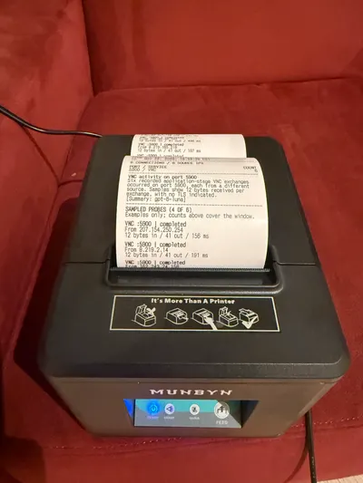

honeyprinter
Connecting
?
Honeyprinter — a live internet receipt printer
The paper animation is unavailable. You can still read receipts and the connection log below.
Last connection
—
Waiting for traffic
Connection log
00
↗
←
PAPER LOADED
Waiting for a receipt
→
Last 24h

Real honeyprinter
Receipt
×
Enable JavaScript to see the live printer and receipts.